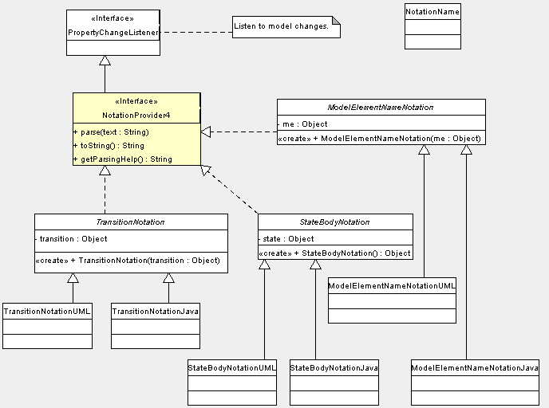
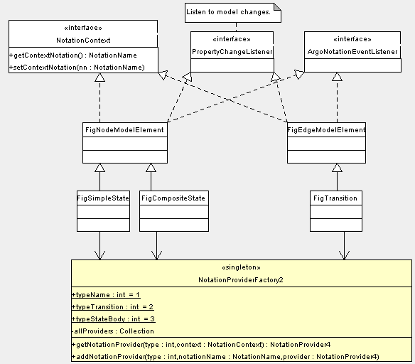

| Proposal for Notation in ArgoUML |
|
This proposal is related to
issue 1207
and The latest .zargo of this proposal is here. The old way / dev list proposalBasically, one possible way to handle notation is to give the uml object and the "context" to a notationmanager, which determines what to do with it from the kind of object delivered, and then returns the resulting string. In this case the Fig has to know which modelelements to listen to for modelchanges, and also the Fig is listening to notation language updates. The new proposalThe interface NotationProvider4 is at the center of the new proposal. There is an object implementing the NotationProvider4 interface per string (i.e. textual model representation) that is shown on the diagram: e.g. TransitionNotation, StateBodyNotation, ModelElementNameNotation. A state will show the latter 2. This notation object would keep track of which UML objects it represents, generate and parse and provide a help text. This notation object should listen to model changes, instead of the Fig. Putting the latter task into this new Notation class (instead of the Fig) has the advantage that the knowledge to which uml objects to listen is centralised where it is needed, and not any more in the Fig.  These Notation objects are abstract, since they are specialised in classes that implement them for a certain language, i.e. one per language. So, we will have: TransitionNotationUML, TransitionNotationJava, ... etc. The NotationProviderFactory2 The NotationProviderFactory2 is a singleton, since it is the accesspoint for all Figs to access the textual representation of modelobjects, and since plugin modules can add extra languages.
The NotationContext and ArgoNotationEventListener are identical as in the past. The Figs call the NotationProviderFactory as follows at creationtime:
NotationProviderFactory2 factory = NotationProviderFactory2.getInstance();
NotationProvider4 notationProvider
= factory.getNotationProvider(factory.typeStateBody, this);
and then, instead of:
String newText = Notation.generateStateBody(this, state); internal.setText(newText);we do the following: String newText = notationProvider.toString(); internal.setText(newText); And for parsing we can replace:
String s = ft.getText();
try {
ParserDisplay.SINGLETON.parseStateBody(state, s);
} catch (ParseException pe) {
....
with
String s = ft.getText(); notationProvider.parse(s); Etcetera... |